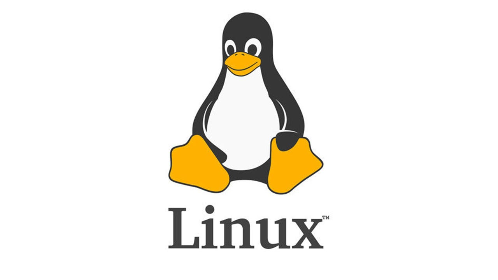
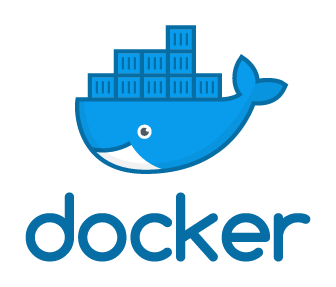
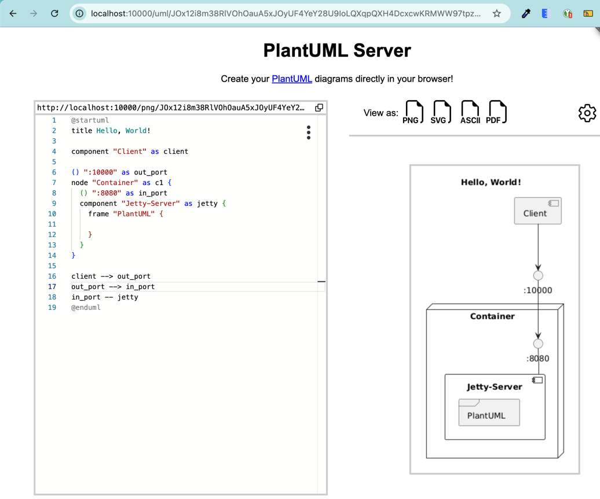
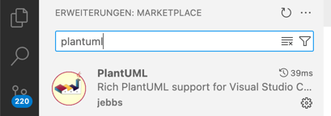
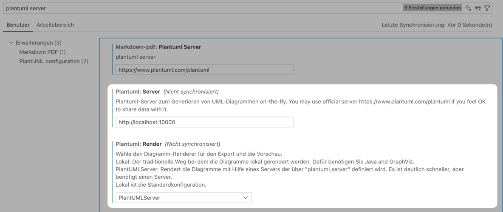
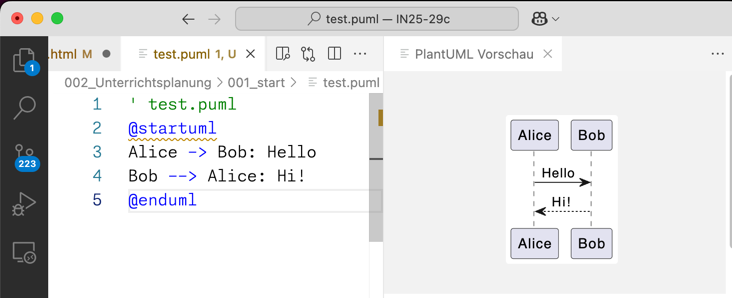

{% extends "../_base_template.html" %}
{% block title %}Lektion 1 - Willkommen{% endblock %}

{% block sections %}
<section data-markdown>
  <textarea data-template>
<i class="fas fa-graduation-cap"></i> M347 - Dienste mit Containern
=============================

Heutiges Ziel
--------------

* Jahresplan: Sie kennen die wichtigsten Daten des Jahres
* Sie wissen, was Sie in diesem Semester lernen
* Sie haben eine lauffähige Docker-Umgebung auf Ihrem Rechner
* Sie haben einen lauffähigen PlantUML-Server, mit dem Sie mit VS Code Diagramme erstellen können

</textarea>
</section>

<section data-markdown>
  <textarea data-template>
# <i class="fas fa-graduation-cap"></i> M347 - Dienste mit Containern

Thema &amp; Jahresplan
--------------

**Thema**:

* Wie beschäftigen uns mit dem Konzept **"Linux-Container"**:
* Sie kennen die Grundkonzepte von Linux-Container-Anwendungen
* Sie können selber Container erstellen
* Sie können bestehende Applikationen in Container-Anwendungen überführen
* Sie können mehrere Container zu einem Gesamtdienst orchestrieren

**Organisation Unterlagen**:

Alles wird digital auf Moodle bereitgestellt. Auch Prüfungen finden digital als Moodle-Tests statt.


**Jahresplan**:

Siehe Moodle
</textarea>
</section>

<section data-markdown>
  <textarea data-template>
<i class="fas fa-graduation-cap"></i> M347 - LBV und Erwartungen, Hausaufgaben
=============================

## LBV - M347-2:

<https://www.modulbaukasten.ch/module/347/1/de-DE?title=Dienst-mit-Container-anwenden&lbv=2>

* LB 1: handlungsorientierte Prüfung 50%
* LB 2: handlungsorientierte Prüfung 50%
* Termine: Moodle

## Erwartungen und Hausaufgaben

* Als **Hausaufgaben** ist jeweils das **Fertigstellen der Aufgaben aus dem Unterricht** zu verstehen
* Wir **bauen auf dem Wissen der letzten Lektionen auf**: Ich erwarte daher von Ihnen:
  * dass Sie die Aufgaben vom Unterricht bis zur nächsten Lektion **ausserhalb des Unterrichts** fertigstellen
  * dass Sie **Fragen vorbereiten**, oder mir via Teams/Mail stellen, wenn Sie nicht weiterkommen
* Es werden keine Hausaufgaben bewertet. Es liegt an Ihnen, diese wie beschrieben zu machen.

* **Ich wiederhole mich aber auch nicht gerne**: Wenn ich merke, dass Ihnen Wissen fehlt, welches wir 
  im Unterricht erarbeitet haben, werde ich Sie darauf verweisen.

</textarea>
</section>

<section data-markdown>
  <textarea data-template>
# <i class="fas fa-graduation-cap"></i> M347 - Dienste mit Containern

## Thema des Moduls: Applikationen als/in Containern bereitstellen
<div style="margin-bottom:2rem"></div>

* Sie lernen, wie Sie Applikationen mittels Docker in **Linux-Containern** bereitstellen können.
* <!-- .element: class="fragment" --> <strong>Häh? Docker? Linux? Container?</strong> Was ist denn das?
<div class="d-flex align-items-start">
  
  
</div>
* <!-- .element: class="fragment" --> In diesem Modul geht es um eine schon länger bekannte Technologie, die in den letzten Jahren immer populärer wurde:<br><strong>Linux-Container</strong><i class="fab fa-linux"></i>
* <!-- .element: class="fragment" --> Was ist das?<br>Einfach gesagt: Eine Möglichkeit, Applikationen und deren Abhängigkeiten in einem Paket zu bündeln, und auf beliebigen (Linux-)Systemen lauffähig zu machen.
* <!-- .element: class="fragment" --> <strong>Aber ich hab doch Windows/MacOS!</strong><br><span class="fragment">Kein Problem, eine Container-Runtime, in Ihrem Fall "Docker for Windows", bringt eine kleine Linux-VM mit, in der die Container laufen.</span>
* <!-- .element: class="fragment" --> Wir beschäftigen uns also mit folgenden Fragen:<br>
  - Was ist Linux?
  - Wie funktionieren Container?
  - Was ist Docker?
  - Wie erstelle ich Container?
  - Wie orchestriere ich mehrere Container zu einem Dienst?
  - Wie setze ich Container in der Praxis ein?
* <!-- .element: class="fragment" --> <strong>Container-basierte Applikationen ist aktuell eine der wichtigsten Technologien im Web- und Cloud-Umfeld.</strong>

</textarea>
</section>


<section data-markdown>
  <textarea data-template>
# <i class="fas fa-graduation-cap"></i> M347 - Dienste mit Containern

## Benötigte Software für den Unterricht

Sie benötigen eine lauffähige **Docker**-Installation auf Ihrem Rechner, sowie eine **Entwicklungsumgebung**.

Software | Details
---------|---------
**Docker Desktop**<br>inkl. `docker compose` | Installationsanleitung unter: <https://docs.docker.com/desktop/install/windows-install/>
**Visual Studio Code** | <https://code.visualstudio.com/Download>
**VS Code Plugins** | [Markdown All In One (empfohlen)](https://marketplace.visualstudio.com/items?itemName=yzhang.markdown-all-in-one)<br>[PlantUML](https://marketplace.visualstudio.com/items?itemName=jebbs.plantuml)

**Docker for Windows** bringt eine kleine Linux-VM mit, in der die Container laufen. Sie benötigen also kein Linux auf Ihrem Rechner.


</textarea>
</section>

<section data-markdown>
  <textarea data-template>
# <i class="fas fa-graduation-cap"></i> M347 - Docker for Windows-Setup

1. Installieren Sie **Docker Desktop** für Windows:<br>
   <https://docs.docker.com/desktop/install/windows-install/>
   - Wählen Sie während der Installation die Option **"Use WSL 2 instead of Hyper-V"** aus
   - Folgen Sie den Anweisungen zu Installation - vor allem die Installation der WSL2-Komponente

2. nach dem Setup: Erster Versuch, einen Container zu starten:
   - Öffnen Sie eine **PowerShell**-Eingabeaufforderung
   - Führen Sie den Befehl `docker run hello-world` aus
   - Wenn alles geklappt hat, sollten Sie eine Erfolgsmeldung sehen

```sh
PS C:\> docker run hello-world
Unable to find image 'hello-world:latest' locally
latest: Pulling from library/hello-world
198f93fd5094: Pull complete
Digest: sha256:a0dfb02aac212703bfcb339d77d47ec32c8706ff250850ecc0e19c8737b18567
Status: Downloaded newer image for hello-world:latest

Hello from Docker!
This message shows that your installation appears to be working correctly.

To generate this message, Docker took the following steps:
 1. The Docker client contacted the Docker daemon.
 2. The Docker daemon pulled the "hello-world" image from the Docker Hub.
    (arm64v8)
 3. The Docker daemon created a new container from that image which runs the
    executable that produces the output you are currently reading.
 4. The Docker daemon streamed that output to the Docker client, which sent it
    to your terminal.

To try something more ambitious, you can run an Ubuntu container with:
 $ docker run -it ubuntu bash

Share images, automate workflows, and more with a free Docker ID:
 https://hub.docker.com/

For more examples and ideas, visit:
 https://docs.docker.com/get-started/
```
</textarea>
</section>

<section data-markdown>
  <textarea data-template>
# <i class="fas fa-flask"></i> M347 - Erster Docker-Container: PlantUML-Server

Wir starten unseren ersten eigenen Container: Einen PlantUML-Server, mit dem wir UML-Diagramme erstellen können.

<div class="d-flex align-items-start gap-10">
  
  <div>

1. Starten Sie eine **PowerShell**-Eingabeaufforderung
2. Starten Sie mit folgendem Kommando einen PlantUML-Server in einem Container:
```sh
docker run --name plantuml -d -p 10000:8080 plantuml/plantuml-server:jetty
```
3. Öffnen Sie in Ihrem Browser die URL <http://localhost:10000> - Sie sollten die Startseite des PlantUML-Servers sehen
4. Fertig! Sie haben soeben:
    - Ihr erstes Docker-Image vom Docker-Hub heruntergeladen
    - Ihren ersten eigenen Container gestartet
    - Einen Dienst in einem Container bereitgestellt
    - Einen Port vom Container auf Ihren Rechner weitergeleitet

  </div>
</div>

**Das war ziemlich einfach, oder?**<br>
**In den nächsten Lektionen werden wir uns anschauen, wie das Ganze funktioniert, und wie Sie eigene Container erstellen können.**

_Stoppen Sie den Container mit `docker stop plantuml`.<br>Starten Sie ihn erneut mit `docker start plantuml`.<br>Löschen Sie ihn mit `docker rm plantuml`._

</textarea>
</section>

<section data-markdown>
<textarea data-template>
# <i class="fas fa-flask"></i> M347 - PlantUML-Plugin in VS Code

Nun können Sie in VS Code mit dem PlantUML-Plugin Diagramme über Ihren eigen PlantUML-Server rendern:

|    |    |
|----|----|
| 1. Installieren Sie das PlantUML-Plugin in VS Code<br>(<https://marketplace.visualstudio.com/items?itemName=jebbs.plantuml>) ||
|<!-- .element colspan="2" --> 2. Öffnen Sie die Einstellungen `(Strg+,)` und suchen Sie nach `PlantUML Server`||
| 3. Tragen Sie bei "PlantUML: Server" die URL Ihres PlantUML-Servers ein: <br>`http://localhost:10000`<br>4. Wählen Sie bei "PlantUML: Render" die Option `PlantUMLServer` |  |
| 5. Erstellen Sie eine neue Datei `test.puml` mit nebenstehendem Inhalt.<br>6. Suchen Sie in der Befehlspalette (Ctrl-Shift-P)<br>`PlantUML: Preview Current Diagram` |  |
 ||
</textarea>
</section>

<section data-markdown>
<textarea data-template>
# <i class="fas fa-flask"></i> M347 - PlantUML - Übungen

Wir verwenden [**PlantUML**](https://plantuml.com/de/) für die Dokumentation unserer Container-Architekturen. Mit PlantUML 
können Sie UML-Diagramme als Code definieren, und diese in Bilder rendern.

### Dokumentation

Sie finden die offizielle Dokumentation unter: <https://plantuml.com/de/>. Dort finden Sie auch ganz viele Beispiele zu den verschiedenen Diagrammtypen.

**Wir verwenden hautpsächlich das Komponentendiagramm**, um unsere Container-Architekturen zu dokumentieren.

### Übungen zu PlantUML

Auf **Moodle** finden Sie ein paar Übungen zu PlantUML. Arbeiten Sie nun daran, und machen Sie diese als Hausaufgaben auf nächstes Mal fertig.

</textarea>
</section>

{% endblock %}